Actual correction: index-zupTnY5d.js. До: index-Bb8RXsDf.js. Оригиналы DPR 1 сохранены отдельно. CPU nearest-neighbour компоновка, без ретуши и замены данных. Различие состояния настоящего сервера не считается ошибкой само по себе. Это не доказательство LAN/hardware/AI/FPS.
ENTRY/AVATAR · Итоговый отчёт · Точные пути
Слева: specs/images/autorize.png
Справа: tasks/evidence/ui-independent-review/correction-static/login-1622x970.png
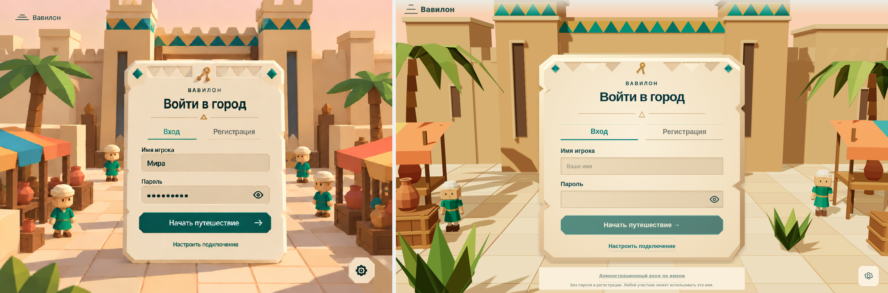
Слева: specs/images/track.png
Справа: tasks/evidence/ui-independent-review/correction-static/friends-1622x970.png
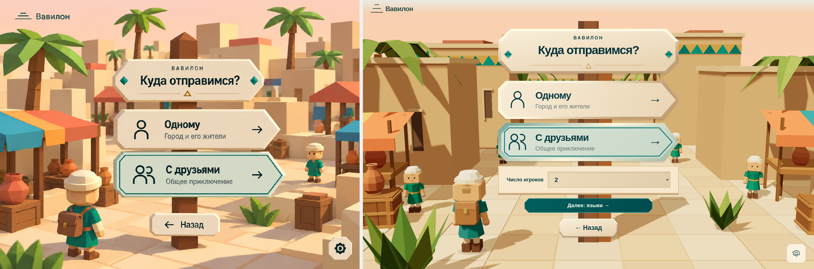
Слева: specs/images/oblik_page.png
Справа: tasks/evidence/ui-independent-review/correction-avatar/lukas-1622x970.png
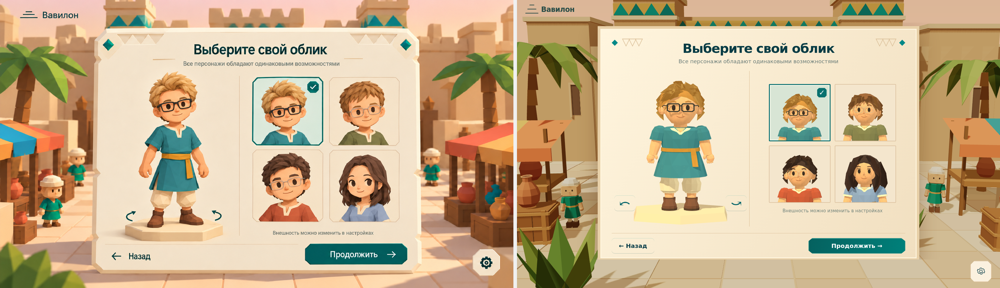
Слева: specs/images/lukas.png
Справа: tasks/evidence/ui-independent-review/correction-avatar/lukas-1622x970.png
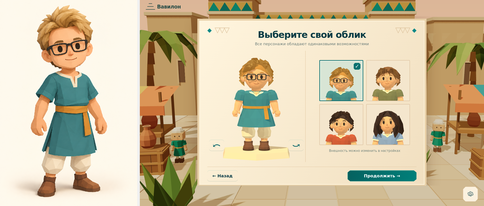
Слева: specs/images/nic.png
Справа: tasks/evidence/ui-independent-review/correction-avatar/nic-1622x970.png
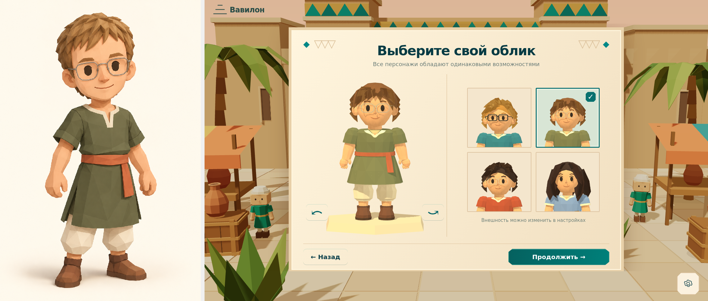
Слева: specs/images/dan.png
Справа: tasks/evidence/ui-independent-review/correction-avatar/dan-1622x970.png
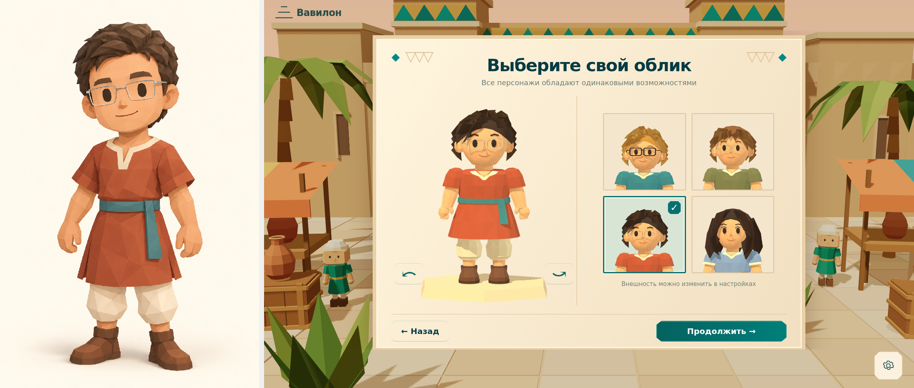
Слева: specs/images/ksu.png
Справа: tasks/evidence/ui-independent-review/correction-avatar/ksu-1622x970.png
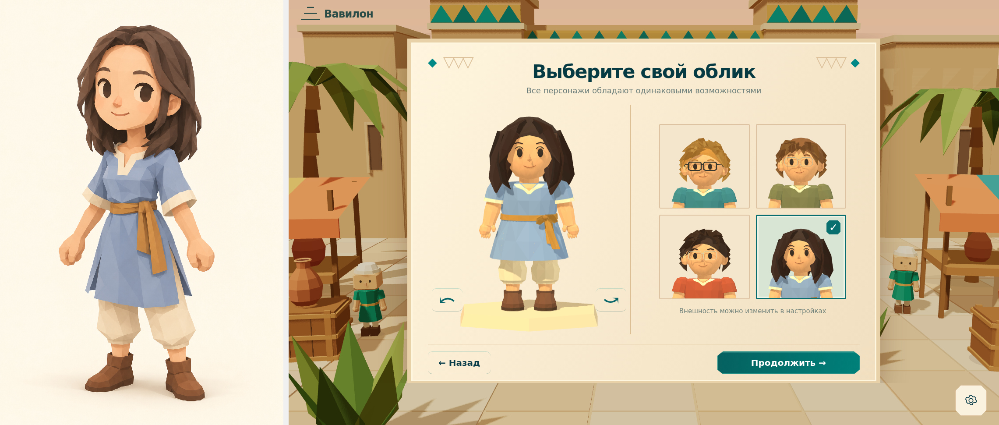
Слева: tasks/evidence/ui-independent-review/fresh-static/login-390x844.png
Справа: tasks/evidence/ui-independent-review/correction-static/login-390x844.png
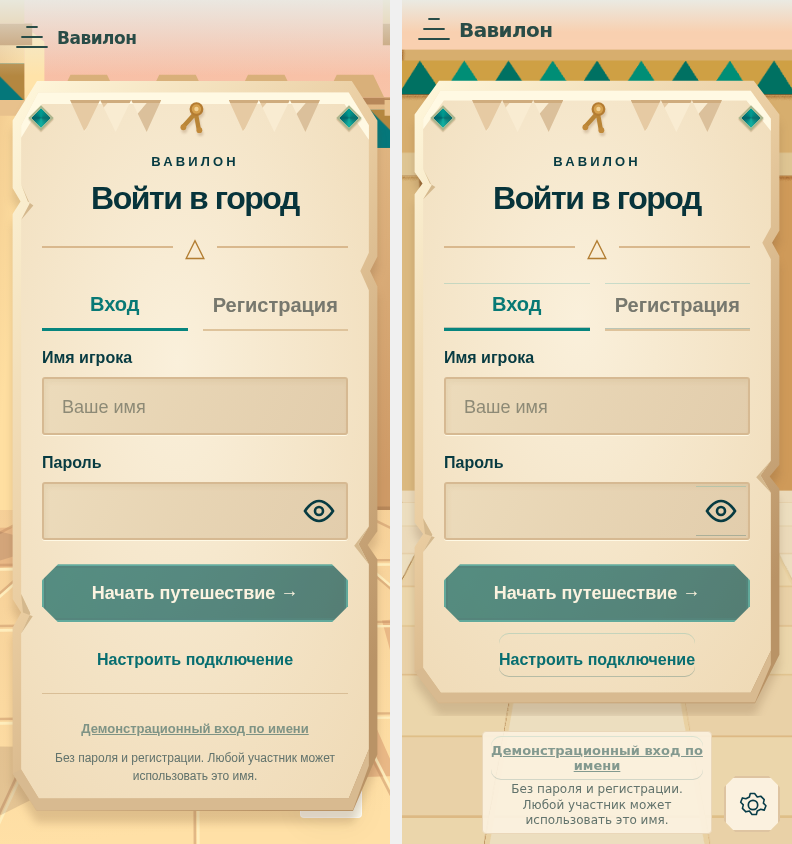
Слева: tasks/evidence/ui-independent-review/fresh-static/registration-390x844.png
Справа: tasks/evidence/ui-independent-review/correction-static/registration-390x844.png
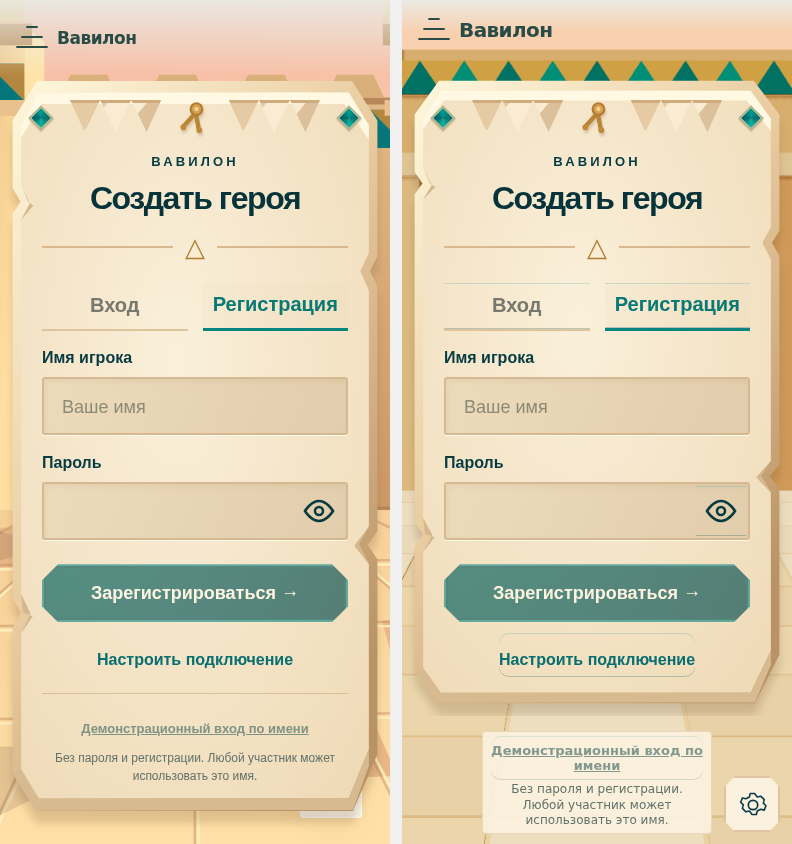
Слева: tasks/evidence/ui-independent-review/fresh-static/friends-1622x970.png
Справа: tasks/evidence/ui-independent-review/correction-static/friends-1622x970.png
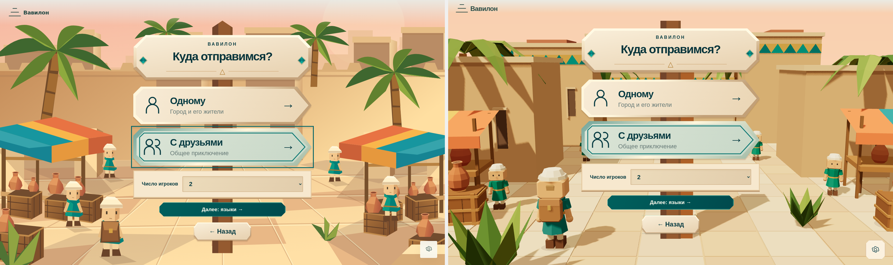
Слева: tasks/evidence/ui-independent-review/fresh-static/mode-390x844.png
Справа: tasks/evidence/ui-independent-review/correction-static/mode-390x844.png
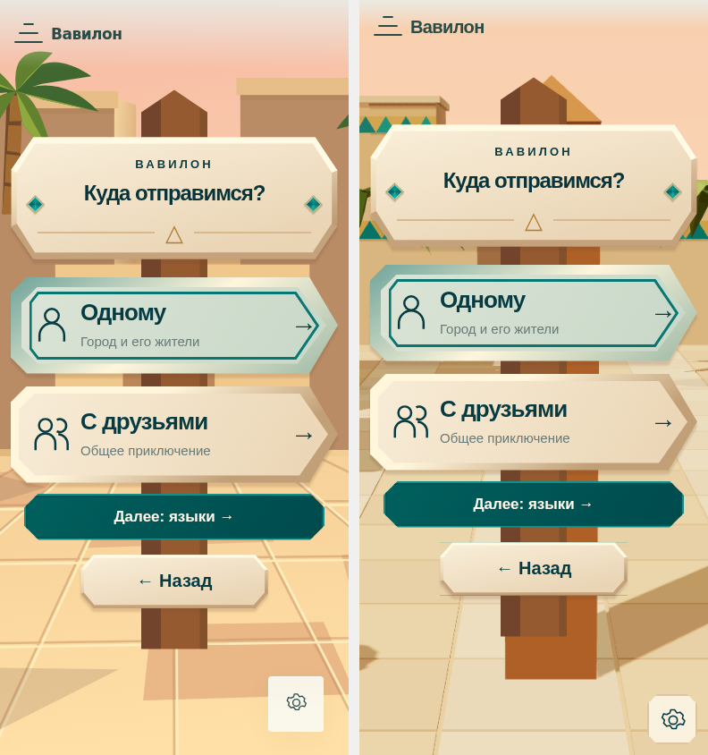
Слева: tasks/evidence/ui-independent-review/fresh-static/languages-640x480.png
Справа: tasks/evidence/ui-independent-review/correction-static/languages-640x480.png
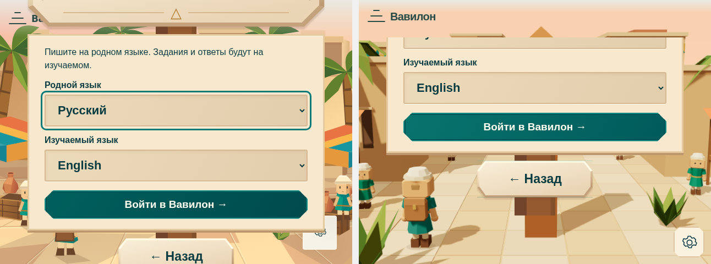
Слева: tasks/evidence/ui-independent-review/fresh-avatar-baseline/chooser-390x844.png
Справа: tasks/evidence/ui-independent-review/correction-avatar/chooser-390x844.png
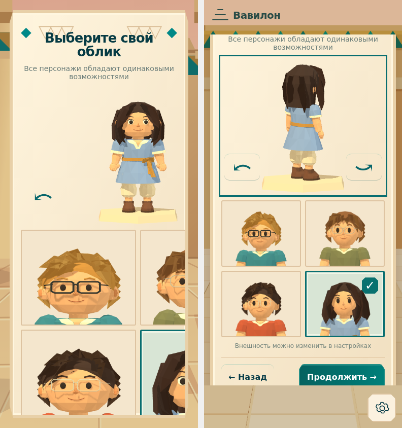
Слева: tasks/evidence/ui-independent-review/fresh-avatar-baseline/lukas-1622x970.png
Справа: tasks/evidence/ui-independent-review/correction-avatar/lukas-1622x970.png
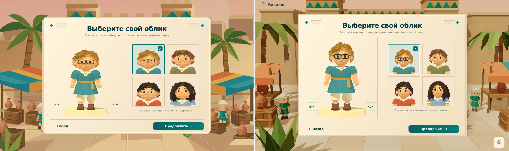
Слева: tasks/evidence/ui-independent-review/fresh-avatar-baseline/nic-1622x970.png
Справа: tasks/evidence/ui-independent-review/correction-avatar/nic-1622x970.png
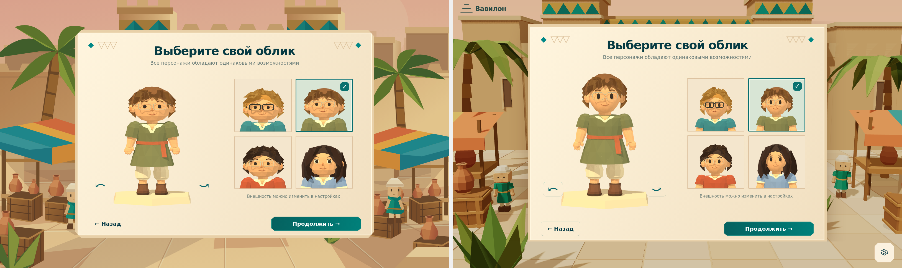
Слева: tasks/evidence/ui-independent-review/fresh-avatar-baseline/dan-1622x970.png
Справа: tasks/evidence/ui-independent-review/correction-avatar/dan-1622x970.png
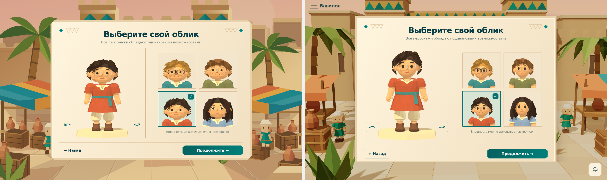
Слева: tasks/evidence/ui-independent-review/fresh-avatar-baseline/ksu-1622x970.png
Справа: tasks/evidence/ui-independent-review/correction-avatar/ksu-1622x970.png
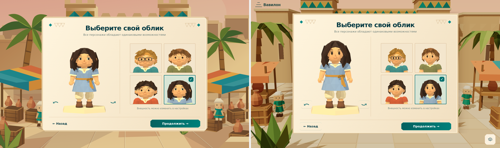